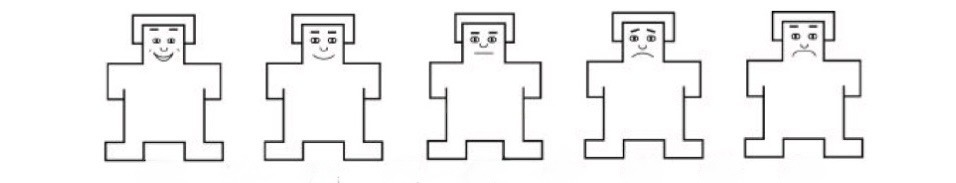

Cihaz Uygun Değil
Bu araştırma, sağlıklı veri toplanabilmesi için sadece bilgisayar (masaüstü veya dizüstü) üzerinden katılımı desteklemektedir.
Lütfen bir bilgisayar kullanarak siteye tekrar erişiniz. İlginiz için teşekkür ederiz.
Bilgilendirilmiş Onam Formu
Demografik Bilgi Formu
Lütfen aşağıdaki soruları yanıtlayınız. Tüm bilgiler gizli tutulacaktır.
Yüz İfadesi Değerlendirme
Bu bölümde size bir dizi yüz fotoğrafı gösterilecektir.
Her yüz için, ifadenin size nasıl hissettirdiğini aşağıdaki manikenleri kullanarak 1 ile 9 arasında bir ölçekte değerlendiriniz.
Doğru ya da yanlış cevap yoktur. Lütfen ilk izleniminize göre yanıt veriniz.
Değerlendirmenizi yapmak için ilgili puanın bulunduğu yuvarlağa tıklayınız.

Gördüğünüz yüz ifadesinin size nasıl hissettirdiğini puanlayınız.
Reddedilme Hassasiyeti Ölçeği
Aşağıda insanların başına gelebilen bazı sosyal durumlar verilmiştir. Lütfen her bir durum için verilen soruları dikkatlice okuyunuz ve size en uygun gelen seçeneği işaretleyiniz.
Teşekkür Ederiz!
Yanıtlarınız başarıyla kaydedilmiştir.
Katılımınız için teşekkür ederiz. Katkılarınız sosyal algı alanındaki bilimsel bilgiye önemli bir katkı sağlayacaktır.
Sorularınız için araştırmacılarla iletişime geçebilirsiniz:
- sude.aldirmaz@std.izmirekonomi.edu.tr
- sila.parmak@std.izmirekonomi.edu.tr
- buket.tokur@std.izmirekonomi.edu.tr
Bu tarayıcı sekmesini kapatabilirsiniz.